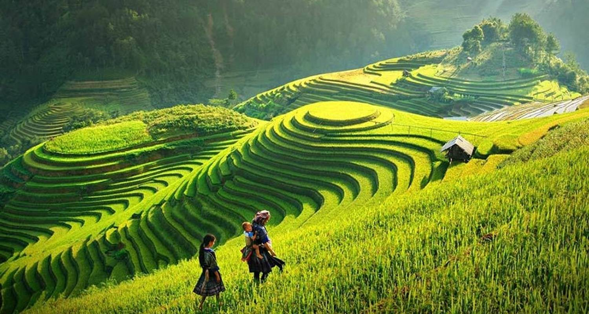

Vietnam is an astonishing mix of natural highlights and cultural diversity.The scenery ranges from jagged peaks seen from winding mountain passes down to verdant paddy fields painted every shade of green in the palette, while the nation's long history and amazing number of ethnic minorities mean that culture-vultures will find plenty to admire.
Hikers, bikers, and outdoor lovers can get their teeth into the countryside within the numerous national parks, while the spectacular karst seascape of Halong Bay is one natural sight that even the more slothful can experience up close on a cruise.
While the rural areas brim with fantastic panoramas, the big cities breathe with contemporary life and provide ample opportunities to get stuck into Vietnam's tasty culinary highlights. This fascinating country is full of surprises and is one of Southeast Asia's most underrated destinations.
The north of Vietnam makes a statement with majestic mountain ranges, centuries-old rice terraces, and fascinating ethnic groups.

Central Vietnam is known for its well-preserved historical sites, smiling locals, and soothing natural beauty. The central coast will beckon you with the promise of enriching experiences and sun-kissed days by the beach.
From island escapes to the non-stop action, southern Vietnam offers both vibrant urban energy and mellow countryside.